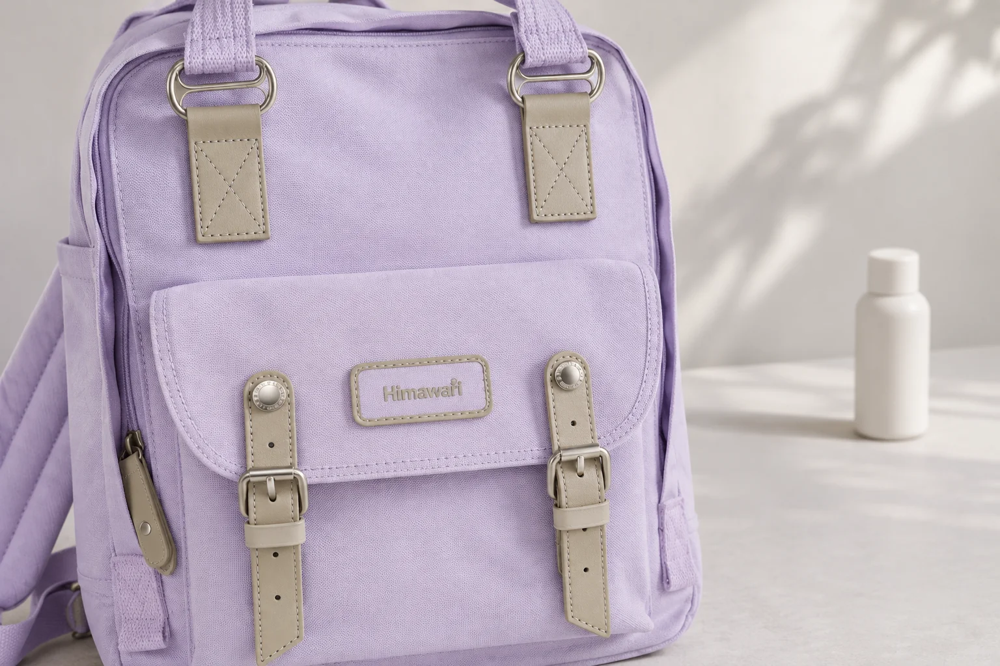
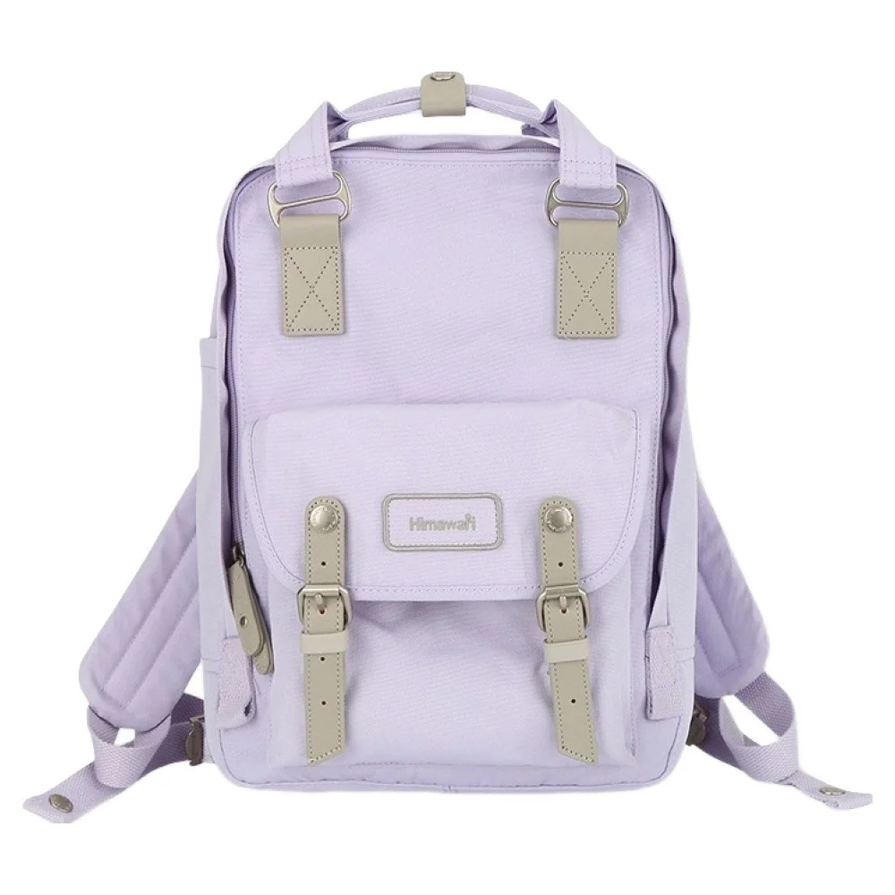

백팩에 방수 스프레이, 소재만 보고 뿌려도 될까
백팩이 비를 맞을까 걱정돼 방수 스프레이를 찾다 보면 적용 소재 목록에 익숙한 섬유 이름이 나옵니다. 가방의 소재도 폴리에스터라면 바로 써도 될까요. 가방 몸판에 적힌 소재와 관리제 용기에 적힌 대상이 겹치는 것은 확인할 정보 하나입니다. 그 가방의 다른 부분과 기존 표면 처리, 관리제가 요구하는 작업 조건까지 맞는지는 이어서 살펴봐야 합니다.
No.194L 라벤더의 공개 정보에는 겉감과 안감이 폴리에스터이며 생활방수 원단을 사용한다고 적혀 있습니다. 외부 크기는 가로28 × 세로39 × 폭15cm입니다. 이 표기에서 별도 관리제를 써도 된다는 설명이나 추천하는 스프레이 종류는 확인하지 못했습니다. 이 글은 특정 관리제를 이 모델에 적용해 본 후기나 구매 권장이 아니라 적용 여부를 확인할 질문을 정리한 글입니다.
질문 하나, 어느 면에 무엇을 더하려는가
원단에 물이 튀는 일이 걱정되는지, 이미 보이는 얼룩을 처리하려는지부터 구분합니다. 발수 처리를 더하려는 목적과 표면을 세척하려는 목적은 다릅니다. 이름에 방수라는 단어가 들어간 병을 골랐다고 그 두 작업을 한꺼번에 맡길 수 있는 것은 아닙니다. 관리제의 용도와 자신이 해결하려는 가방의 상태가 맞는지 먼저 읽습니다.
가방이 새것이라면 이미 안내된 생활방수 원단 표기에 무엇을 더 기대하는지도 적어 봅니다. 더 오래 비를 맞아도 되는 가방으로 바꾸고 싶은 것인지, 일상에서 튄 물의 관리를 생각하는 것인지에 따라 필요한 확인 자료가 달라집니다. 스프레이를 더 뿌렸다는 이유만으로 지퍼와 봉제부를 포함한 완성품의 방수 성능이 새로 입증되지는 않습니다. No.194L에 그런 시험 결과가 있다는 뜻으로 읽지 않습니다.

질문 둘, 폴리에스터라고 적힌 곳은 어디인가
No.194L의 실제 사진에서는 라벤더색 몸판 외에 베이지색 손잡이 연결 부분과 앞쪽 고정끈, 금속 고리와 버클이 구별됩니다. 겉감과 안감의 섬유 이름이 안내되어 있어도 사진에 보이는 모든 부분의 재료와 표면 처리가 각각 적힌 것은 아닙니다. 베이지 부분을 색만 보고 가죽이라고 부르거나 몸판과 똑같은 소재라고 채워 넣지 않습니다.
따라서 가방 전체를 한 번에 분사하는 작업을 생각했다면 적용 범위가 더 커집니다. 넓은 몸판에 사용할 수 있는지와 손잡이 연결부·앞 고정끈에 닿아도 되는지는 같은 질문으로 끝나지 않을 수 있습니다. 경계가 어디인지 실제 사진에서 짚어 두면 판매처에 어느 부분을 확인하려는지 전달하기 쉽습니다. 가방에 붙은 부위를 임의로 떼거나 덮는 방법도 안내받기 전에 만들지는 않습니다.

질문 셋, 관리제의 사용법을 그대로 맞출 수 있는가
예를 들어 Nikwax의 Tent & Gear SolarProof 공식 안내는 합성 소재 장비를 적용 대상으로 설명하고 눈에 잘 띄지 않는 부분에서 색 변화 가능성을 먼저 확인하도록 안내합니다. 이는 관리제 제조사가 자기 제품의 조건을 적은 사례입니다. No.194L에 적합하다고 히마와리가 확인했다는 뜻도, 다른 이름의 관리제에 같은 사용법을 적용할 수 있다는 뜻도 아닙니다.
대상 소재 한 줄 뒤에 있는 준비와 건조 조건까지 함께 읽습니다. 관리제가 요구하는 사전 작업과 가방의 관리 표시가 서로 맞는지 확인해야 실제 사용 여부를 판단할 수 있습니다. No.194L의 현재 안내는 부드러운 천으로 부분 관리한 뒤 그늘에서 건조하고 세탁기·건조기 사용을 피하라는 내용입니다. 관리제에 다른 작업이 필요하더라도 그 지시가 가방의 제한을 자동으로 바꾸지는 않습니다.
여러 용기의 설명을 섞어 새로운 방법을 만드는 것도 피합니다. 한 제품의 분사 거리와 다른 제품의 건조 시간을 연결하면 어느 제조사의 안내에도 없는 작업이 됩니다. 구매를 검토 중이라면 관리제의 정확한 이름과 사용 설명을 한 묶음으로 두고 확인하세요. 가방 쪽에서 답변을 받을 때에도 그 이름을 함께 전달하면 단순히 방수 스프레이라고 부를 때보다 확인 범위가 좁아집니다.
질문 넷, 작은 면의 확인이 무엇까지 말해 주는가
가방과 관리제 양쪽에서 사용 가능하다고 확인되고 작은 면 시험을 안내받았다면 그 지침에 따라 판단할 수 있습니다. 그러나 임의로 숨은 곳을 정해 시험하는 것을 모든 가방에 공통인 첫 단계로 제안하지는 않습니다. 먼저 적용 가능 여부와 시험 부위를 확인해야 합니다. 사진상 안 보이는 바닥도 원래 제품의 한 면이며 확인되지 않은 처리를 해도 되는 빈 공간은 아닙니다.
작은 면에서 색이 달라 보이지 않았다는 관찰은 그 면에서 눈에 보인 결과입니다. 다른 부품에 닿았을 때의 상태나 완성된 가방의 방수 등급까지 설명하지는 않습니다. 한 번의 확인으로 성능과 외형에 관한 모든 질문을 끝내지 않습니다. 작업을 진행할 수 있다는 안내를 받더라도 실제로 무엇을 확인했는지 범위를 나누어 기록할 수 있습니다.
작업 전 사진과 비교할 계획이라면 비슷한 조명에서 같은 부위를 봅니다. 단지 광택이 달라 보이는지, 색이 진하게 보이는지처럼 관찰한 사실을 적고 원인이 확실하지 않은 변화는 추측으로 단정하지 않습니다. 변화가 보일 때에는 작업 범위를 더 넓히기보다 사용한 제품과 조건을 정리해 문의합니다. 사진을 제품 호환성이나 방수 성능의 시험 성적서처럼 사용하지 않습니다.
답을 받기 전에는 기존 안내 안에 둡니다
문의는 No.194L 라벤더의 몸판과 베이지색 연결부에 특정 관리제를 사용할 수 있는지, 원래 표면 처리와 함께 써도 되는지를 묻는 식으로 구체화할 수 있습니다. 관리제의 전체 이름과 설명을 준비하되 가방의 재료나 코팅 종류를 추정해 적지 않습니다. 확인된 겉감·안감 표기와 실제 보이는 부위를 구분하면 답변도 어느 범위에 관한 것인지 읽기 쉽습니다.
현재 자료에 없는 사용 승인을 스스로 만들어 낼 필요는 없습니다. 부분 관리와 그늘 건조라는 기존 안내를 유지하며 필요한 적용 정보를 더 확인하면 됩니다. 소재 이름이 같다는 이유만으로 가방 전체에 새 처리를 더하는 대신 어떤 면에 어떤 제품을 어떤 조건으로 쓰려는지를 먼저 정해 보세요. 그 질문에 답할 자료가 모였을 때 관리 방법을 선택할 수 있습니다.
일반 구조와 제품 표기의 참고 자료: Nikwax Tent & Gear SolarProof 공식 사용 안내.